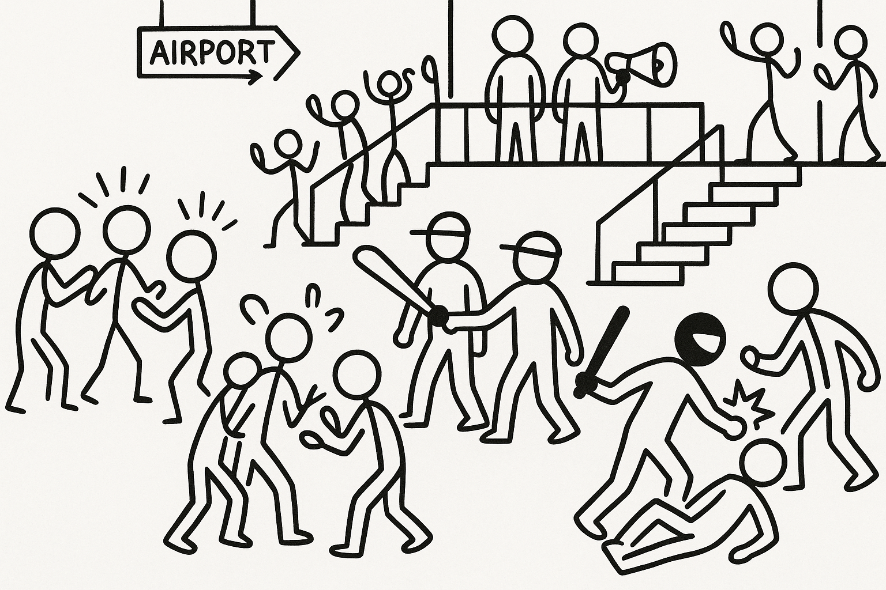
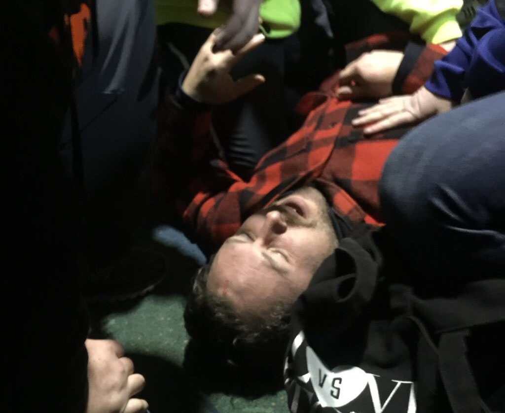
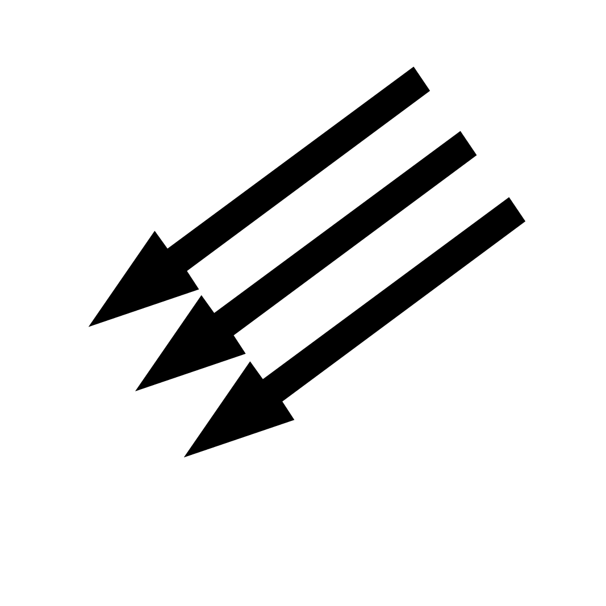

We went into the crowd where there was more yelling and shoving. The rightwing took off into the airport and the crowd after them. Once they got into the airport, I really thought the crowd was going to rip them apart. They were pinned up against the wall and they were still yelling their hate and spite, and people were getting closer and closer to laying them the fuck out.
You got knocked the fuck out!
The cops came in and formed a protective circle around the preachers and escorted them to a balcony that overlooked the terminal. When the preachers got to what they thought was safety, they got on their bullhorn again and started to yell. People began trying to climb the walls to get to them. I was one of them. As we were trying to push to the top of the stairs, one of the airport police cross-checked me in the mouth with his nightstick. For a few seconds I went berserk and I rushed at the cops. My friends grabbed me.

The police escorted the preachers to the bottom of the stairs again and started to go to the terminal exit. The crowd followed them, screaming. When they got outside, the preachers turned and stood their ground. The crowd surrounded them again and this time there was even more pushing back and forth. One of the preachers pushed me, and I shoved him back. The head preacher turned and ran for the safety of the terminal. I and a few others gave chase. When he got inside, some masked hero laid the preacher out. I know because I was the third person through the door chasing him. There is a famous video on a famous website for fights where you can hear my nasally voice saying, "You got knocked the fuck out!" over and over, like my name was a wannabe Chris Tucker auditioning for the first Friday.
A really important insight into the Portland Uprising and anti-Trump, antifascist movement. Written authentically in Marquez's voice, it combines his first person narrative with news articles and photos, and even adds a Spotify playlist for good measure. Highly recommended.
We read a lot about anti-fascism, and in particular antifa, both pro and con, in the news and publications. It has been rare that we get a chance to read something from those who are in the thick of that fight — and that is why this book is so important. It answers a lot of questions one might have about fighting fascism, and it comes from the personal experience of someone who lived that fight. You don't move forward in anything without getting the full story, and Luis Enrique Marquez advances us in that regard in so many ways.
I'm a firm believer that anger can be productive if channeled in the correct ways. Let this book make you angry, and therefore inspire you to do and be better.

Reclaiming the Story
When misinformation spreads, the only defense is to speak for yourself.
'Absurd': Noem claim to have arrested 'antifa' founder's girlfriend stirs ridicule →
Breaking windows isn't the story — holding each other is.
Luis Marquez joins Davey D to talk about antifascism, discipline, and care on the streets of Portland.